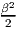
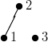
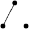
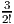
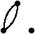
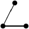
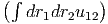
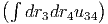
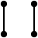

Symbolic computation can reduce an expression like ab∕b2 to a∕b or evaluate the integral of x2 as x3∕3 + C. This can be very time-saving. For example, integration of rational functions would require one to sit down and work out a partial fraction decomposition—a tedious procedure. Instead, we can get answers immediately using symbolic computation software.
A sample session with the program Mathematica:
Symbolic computation software is efficient for certain tasks, but worse than the human mind for others. For example, simplifying expressions is something humans appear to be far better in than computers. Especially when the same calculation is carried out by hand over and over again, the human brain recognizes simplifications that elude symbolic algebra packages.
Software packages can have bugs and mathematical handbooks can have typos. Fortunately, bugs tend to get corrected over time, in books as well as in software. And there are still explicitly solvable integrals that current symbolic computation programs are unable to recognize. Can we rely on results from computer algebra systems? The answer is that neither can we rely on manual symbolic manipulations. Numerical results have proven theoretical results incorrect. The reliability of any result depends on thoughtfulness.
□ Currently available comprehensive packages with symbolic computation abilities include Axiom, Maple, Mathematica, Maxima, Reduce, and SymPy. For more information try SymbolicNet at http://www.symbolicnet.org.
A special purpose data base is the On-Line Encyclopedia of Integer Sequences by Neil J. A. Sloane at http://oeis.org.
One kind of symbolic computation, used by humans and for computers, are diagrammatic perturbation expansions. Consider a classical gas at temperature T. The partition function, which is key to calculating thermal properties of a statistical system, is the sum of exponential factors exp(-E∕kT), where E is kinetic plus potential energy and k the Boltzmann constant. Denote β = 1∕kT for brevity. The kinetic energy of a particle is its momentum squared divided by two times its mass, p2∕2m. The potential energy is given by the distance r between particles via the pairwise potential u(|r|), whose form we keep general.
For one particle there is no potential energy and the partition function is Z(β,V,m) = C ∫ dp∫ dre-βp2∕2m, where V is the volume and C a physical constant. (That constant contains information about how many elements the sum has within a continuous interval.) For two particles the partition function is
The integrals over momentum could be easily carried out since they are Gaussian integrals. However, a gas without interactions is an ideal gas and hence we simply write Z = Zideal ∫ dr1dr2e-βu(r1-r2), which also absorbs the constant C. An expansion for small β, that is, high temperature, yields Z = Zideal ∫ dr1dr2[1 - βu12 + u122 + ...]. Here, we abbreviated u12 = u(|r1 - r2|). For three particles,
| ∫ dr1dr2dr3u12 = |  |
Since u12, u13, and u23 yield the same contribution, one diagram suffices to represent all three terms. The full perturbation expansion for Z∕Zideal in diagrammatic form is
| -3β× |  | +β2× |  | +3β2× |  | + ... |
The number of dots is the number of particles. The number of lines corresponds to the power of β, that is, the order of the expansion. Every diagram has a multiplication factor corresponding to the number of distinct possibilities it can be drawn. In addition, it has a factorial and a binomial prefactor from the coefficients in the expansion. Using the diagrams, it is straightforward to write down the perturbation expansion for more particles or to higher order.
Not every diagram requires to calculate a new integral. For example, the four-particle term ∫ dr1dr2dr3dr4u12u34 = . Hence, this diagram can be reduced to the product of simpler diagrams:
|  | = |
| × |
|
For the series expansion to converge, integrals of u and of powers of u need to converge. Unfortunately, the integrals diverge for many potentials. For example, for a one-dimensional gas of charged particles, u is proportional to 1∕r, and ∫ u(r)dr diverges when the particles are very close to each other and when they are very far from each other. In physics, these two types of singularities are called ultraviolet and infrared divergences, respectively; a purely verbal analogy to the wavelength extremes of visible light. Despite divergent integrals, power series expansions of exponentials are common in quantum field theory.